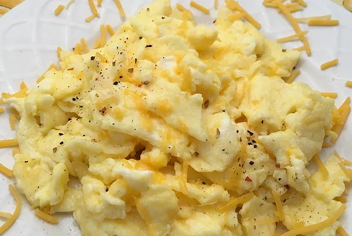

Scrambled eggs

Description
The following is a recipe for making scrambled eggs, a common breakfast consumed all over the world with various variations.
Ingredients
- 2 eggs
- 2 tablespoons sliced Cheddar cheese
- 2 thin slices ham (optional)
- 1 teaspoon heavy whipping cream
- 1/2 teaspoon butter
Steps:
- Whisk eggs together in a small bowl until smooth.
- Mix in Cheddar cheese, ham and heavy cream.
- Melt butter in a skillet over medium heat.
- Pour in egg mixture; cook and stir untel set but still moist, 3-5 minutes.